1. Introduction
This section is not normative.
1.1. Module interactions
This module extends the inline box model of CSS Level 2 [CSS21] to support ruby.
None of the properties in this module apply to the ::first-line or
::first-letter pseudo-elements.
1.2. Values
This specification follows the CSS property definition conventions from [CSS21]. Value types not defined in this specification are defined in CSS Level 2 Revision 1 [CSS21]. Other CSS modules may expand the definitions of these value types: for example [CSS3VAL], when combined with this module, expands the definition of the <length> value type as used in this specification.
In addition to the property-specific values listed in their definitions, all properties defined in this specification also accept the inherit keyword as their property value. For readability it has not been repeated explicitly.
1.3. Diagram conventions
Many typographical conventions in East Asian typography depend on whether the character rendered is wide (CJK) or narrow (non-CJK). There are a number of illustrations in this document for which the following legend is used:
- 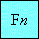
- Wide-cell glyph (e.g. Han) that is the nth character in the text run. They are typically sized to 50% when used as annotations.
- 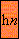
- Narrow-cell glyph (e.g. Roman) which is the nth glyph in the text run.
The orientation which the above symbols assume in the diagrams corresponds to the orientation that the glyphs they represent are intended to assume when rendered by the user agent. Spacing between these characters in the diagrams is incidental, unless intentionally changed to make a point.
1.4. What is ruby?
Ruby is the commonly-used name for a run of text that appears alongside another run of text (referred to as the “base”) and serves as an annotation or a pronunciation guide associated with that run of text.
The following figures show two examples of Ruby, a simple case and one with more complicated structure.
In this first example, a single annotation is used to annotate the base text.
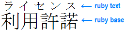
Example of ruby used in Japanese (simple case)
In Japanese typography, this case is sometimes called taigo ruby or group-ruby (per-word ruby), because the annotation as a whole is associated with multi-character word (as a whole).
In this second example, two levels of annotations are attached to a base sequence: the hiragana characters on top refer to the pronunciation of each of the base kanji characters, while the words “Keio” and “University” on the bottom are annotations describing the English translation.
Complex ruby with annotation text over and under the base characters
Notice that to allow correct association between the hiragana characters and their corresponding Kanji base characters, the spacing between these Kanji characters is adjusted. (This happens around the fourth Kanji character in the figure above.) To avoid variable spacing between the Kanji characters in the example above the hiragana annotations can be styled as a collapsed annotation, which will look more like the group-ruby example earlier. However because the base-annotation pairings are recorded in the ruby structure, if the text breaks across lines, the annotation characters will stay correctly paired with their respective base characters.
Ruby formatting as used in Japanese is described in JIS X-4051 [JIS4051] (in Japanese) and in Requirements for Japanese Text Layout [JLREQ] (in English and Japanese)]. In HTML, ruby structure and markup to represent it is described in the Ruby Markup Extension specification. This module describes the CSS rendering model and formatting controls relevant to ruby layout of such markup.
2. Ruby Box Model
The CSS ruby model is based on the W3C HTML5 Ruby Markup model and the XHTML Ruby Annotation Recommendation [RUBY]. In this model, a ruby structure consists of one or more ruby base elements representing the base (annotated) text, associated with one or more levels of ruby annotation elements representing the annotations. The structure of ruby is similar to that of a table: there are “rows” (the base text level, each annotation level) and “columns” (each ruby base and its corresponding ruby annotations).
Consecutive bases and annotations are grouped together into ruby segments. Within a ruby segment, a ruby annotation may span multiple ruby bases.
In HTML, a single <ruby> element may contain multiple ruby segments.
(In the XHTML Ruby model, a single <ruby> element can only contain one ruby segment.)
2.1. Ruby-specific display Values
For document languages (such as XML applications) that do not have pre-defined ruby elements, authors must map document language elements to ruby elements; this is done with the display property.
| Name: | display |
|---|---|
| New Values: | ruby | ruby-base | ruby-text | ruby-base-container | ruby-text-container |
The following new display values assign ruby layout roles to an arbitrary element:
- ruby
- Specifies that an element generates a ruby container box.
(Corresponds to HTML/XHTML
<ruby>elements.) - ruby-base
- Specifies that an element generates a ruby base box.
(Corresponds to HTML/XHTML
<rb>elements.) - ruby-text
- Specifies that an element generates a ruby annotation box.
(Corresponds to HTML/XHTML
<rt>elements.) - ruby-base-container
- Specifies that an element generates a ruby base container box.
(Corresponds to XHTML
<rbc>elements; generated as an anonymous box in HTML.) - ruby-text-container
- Specifies that an element generates a ruby annotation container box.
(Corresponds to HTML/XHTML
<rtc>elements.)
Authors using a language (such as HTML)
that supports dedicated ruby markup
should use that markup rather than
styling arbitrary elements (like <span>)
with ruby display values.
Using the correct markup ensures that screen readers
and non-CSS renderers can interpret the ruby structures.
2.1.1. The Ruby Formatting Context
Ruby containers are non-atomic inline-level boxes. Like inline boxes, they break across lines, and their containing block is the nearest block container ancestor. And just as the contents of an inline box participate in the same inline formatting context that contains the inline box itself, a ruby container and its base-level contents participate in the same inline formatting context that contains the ruby container itself.
However ruby containers also establish a ruby formatting context that builds further structure around their segment of the inline formatting context. Ruby bases, ruby annotations, ruby base containers, and ruby annotation containers are internal ruby boxes: like internal table elements, they have specific roles in ruby layout, and participate in their ruby container’s ruby formatting context.
As with the contents of inline boxes, the containing block for the contents of a ruby container (and all its internal ruby boxes) is the containing block of the ruby container. So floats, for example, are trapped by the ruby container’s containing block, not any of the ruby box types.
Are internal ruby boxes inline-level?
2.1.2. Non-Inline Ruby
If an element has an inner display type of ruby and an outer display type other than inline, then it generates two boxes: a principal block container box of the required outer display type type, and an inline-level ruby container. All properties specified on the element apply to the principal box (and if inheritable, inherit to the ruby container box). This allows styling the element as a block, while correctly maintaining the internal ruby structure.
Note that absolute positioning or floating an element causes its display value to compute to a block-level equivalent. (See [CSS3-DISPLAY] or [CSS21] section 9.7.) For the internal ruby display types, this causes their display value to compute to block.
2.2. Anonymous Ruby Box Generation
The CSS model does not require that the document language include elements that correspond to each of these components. Missing parts of the structure are implied through the anonymous box generation rules similar to those used to normalize tables. [CSS21]
- Generate anonymous ruby containers:
Any consecutive sequence of
improperly-contained
ruby base containers,
ruby annotation containers,
ruby bases,
and/or
ruby annotations
(and any intervening white space)
is wrapped in an anonymous ruby container.
For the purpose of this step:
- an improperly-contained ruby base is one not parented by a ruby base container or ruby container
- an improperly-contained ruby annotation is one not parented by a ruby annotation container or ruby container
- an improperly-contained ruby base container or ruby annotation container is one not parented by a ruby container
- Inlinize block-level boxes: Any in-flow block-level boxes directly contained by a ruby container, ruby base container, ruby annotation container, ruby base box, or ruby annotation box are forced to be inline-level boxes, and their display value computed accordingly. For example, the display property of an in-flow element with display: block parented by an element with display: ruby-text computes to inline-block. This computation occurs after any intermediary anonymous-box fixup (such as that required by internal table elements).
- Wrap misparented inline-level content:
Any consecutive sequence of text and inline-level boxes
directly parented by a ruby container or ruby base container
is wrapped in an anonymous ruby base.
Similarly, any consecutive sequence of text and inline-level boxes
directly parented by a ruby annotation container
is wrapped in an anonymous ruby annotation.
However, if an anonymous box so constructed contains only white space, it is considered intra-ruby white space and is either discarded or preserved as described below.
- Trim leading/trailing white space: Any intra-ruby white space that is not the sole child of its parent and occurs at the beginning or end of a ruby container, ruby annotation container, or ruby base container is removed, as if it had display: none
- Remove inter-level white space:
Any intra-ruby white space
whose immediately adjacent siblings match one of the patterns below
is inter-level white space
and is removed, as if it had display: none.
Previous box Next box any ruby annotation container not ruby annotation ruby annotation - Interpret intra-level white space: Any intra-ruby white space box whose immediately adjacent siblings match one of the patterns below is assigned the box type and subtype defined in the table below: boxes defined above are treated specially for pairing and layout. See below.
- Suppress line breaks:
Convert all forced line breaks inside ruby annotations (regardless of white-space value)
as defined for collapsible segment breaks in CSS Text Level 3 § 4.1.2.
The goal of this is to simplify the layout model by suppressing any line breaks within ruby annotations. Alternatively we could try to define some kind of acceptable behavior for them.
- Generate anonymous level containers: Any consecutive sequence of ruby bases and inter-base white space (and not inter-segment white space) not parented by a ruby base container is wrapped in an anonymous ruby base container. Similarly, any consecutive sequence of ruby annotations and inter-annotation white space not parented by a ruby annotation container is wrapped in an anonymous ruby annotation container.
Make this diagram into an example.
{kind=link}
Once all ruby layout structures are properly parented, the UA can start to associate bases with their annotations.
Note that the UA is not required to create any of these anonymous boxes (or the anonymous empty intra-level white space boxes in the pairing section) in its internal structures, as long as pairing and layout behaves as if they existed.
2.3. Annotation Pairing
Annotation pairing is the process of associating ruby annotations with ruby bases. Each ruby annotation is associated with one or more ruby bases, and is said to span those bases. (A ruby annotation that spans multiple bases is called a spanning annotation.)
A ruby base is can be associated with only one ruby annotation per annotation level. However, if there are multiple annotation levels, it can be associated with multiple ruby annotations.
Once pairing is complete, ruby “column” units are defined, each represented by a single ruby base and one ruby annotation (possibly an empty, anonymous one) from each annotation level in its ruby segment.
2.3.1. Segment Pairing and Annotation Levels
A ruby structure is divided into ruby segments, each consisting of a single ruby base container followed by one or more ruby annotation containers. Each ruby annotation container in a ruby segment represents one level of annotation for the base text: the first one represents the first level of annotation, the second one represents the second level of annotation, and so on. The ruby base container represents the base level. The ruby base container in each segment is thus paired with each of the ruby annotation containers in that segment.
In order to handle degenerate cases, some empty anonymous containers are assumed:
- If the first child of a ruby container is a ruby annotation container, an anonymous, empty ruby base container is assumed to exist before it.
- Similarly, if the ruby container contains consecutive ruby base containers, anonymous, empty ruby annotation containers are assumed to exist between them.
Inter-segment white space is effectively a ruby segment of its own.
2.3.2. Unit Pairing and Spanning Annotations
Within a ruby segment, each ruby base in the ruby base container is paired with one ruby annotation from each ruby annotation container in its ruby segment.
If a ruby annotation container contains only a single, anonymous ruby annotation, then that ruby annotation is paired with (i.e. spans across) all of the ruby bases in its ruby segment.
Otherwise, each ruby annotation is paired, in order, with the corresponding ruby base in that segment. If there are not enough ruby annotations in a ruby annotation container, the remaining ruby bases are paired with anonymous empty annotations inserted at the end of the ruby annotation container. If there are not enough ruby bases, any remaining ruby annotations pair with empty, anonymous bases inserted at the end of the ruby base container.
If an implementation supports ruby markup with explicit spanning (e.g. XHTML Complex Ruby Annotations), it must adjust the pairing rules to pair spanning annotations to their bases appropriately.
Intra-level white space does not participate in standard annotation pairing. However, if the immediately-adjacent ruby bases or ruby annotations are paired
- with two ruby bases or annotations that surround corresponding intra-level white space in another level, then the so-corresponding intra-level white space boxes are also paired.
- with a single spanning ruby annotation, then the intra-level white space is also paired to that ruby annotation
- with two ruby bases or annotations with no intervening intra-level white space, then the intra-level white space box pairs with an anonymous empty intra-level white space box assumed to exist between them.
2.3.3. Complex Spanning with Nested Ruby
When ruby containers are nested, pairing begins with the deepest ruby container, then expands out. From the pairing perspective of the outer ruby container, each ruby container nested within another ruby container counts as representing a single ruby base/annotation per level. The outer ruby container’s ruby annotations paired to the nested ruby are therefore paired with (and span) all of the nested ruby container’s ruby bases. Each ruby annotation container in the nested ruby container occupies the same annotation level in the outer ruby container as it does in the inner one and participates in its layout as if it were directly contained in the outer ruby container.
This process is recursive. Thus, using nested ruby containers allows the representation of complex spanning relationships.
It’s not clear whether this falls out of layout handling of ruby containers inside ruby bases or needs to be handled specially. Waiting until layout is better-defined to find out...
2.4. Autohiding Base-identical Annotations
If a ruby annotation has the exact same text content as its base, it is hidden. Hiding a ruby annotation does not affect annotation pairing or the block-axis positioning of boxes in other levels. However the hidden annotation is not visible, and it has no impact on layout other than to separate adjacent sequences of ruby annotation boxes within its level, as if they belonged to separate segments and the hidden annotation’s base were not a ruby base but an intervening inline.
This is to allow correct inlined display of annotations for Japanese words that are a mix of kanji and hiragana. For example, the word 振り仮名 should be inlined as
振り仮名(ふりがな)
and therefore marked up as
<ruby> <rb>振</rb><rb>り</rb><rb>仮</rb><rb>名</rb> <rp>(</rp><rt>ふ</rt><rt>り</rt><rt>が</rt><rt>な</rt><rp>)</rp> <ruby>
However, when displayed as ruby, the “り” should be hidden
Hiragana ruby for 振り仮名. Notice there is no hiragana annotation above り, since it is already in hiragana.
When the computed value of ruby-merge is collapse, the autohiding is disabled. When the computed value of ruby-merge is auto, the user agent may decide whether to autohide or not, but it is recommended to autohide if the algorithm the user agent chose produces the results similar to separate would produce.
The content comparison for this auto-hiding behavior
takes place prior to white space collapsing (white-space) and text transformation (text-transform)
and ignores elements (considers only the textContent of the boxes).
Future levels of CSS Ruby may add controls for auto-hiding, but in this level it is always forced.
2.5. White Space Collapsing
White space within a ruby structure is discarded
- at the beginning and end of a ruby container, ruby annotation container, or ruby base container,
- between a ruby base container and its following ruby annotation container,
- between ruby annotation containers.
<ruby> <rb>東</rb><rb>京</rb> <rt>とう</rt><rt>きょう</rt> <rt>Tō</rt><rt>kyō</rt> </ruby>
Between ruby segments, between ruby bases, and between ruby annotations, however, white space is not discarded, and is maintained for rendering as inter-base, inter-annotation, or inter-segment white space. (See Anonymous Ruby Box Generation, above.)
The rules preserving white space allow ruby to be used with space-separated scripts such as Latin. For example,
<ruby> <rb>W</rb><rb>W</rb><rb>W</rb> <rt>World</rt> <rt>Wide</rt> <rt>Web</rt> </ruby>
They also ensure that annotated white space is preserved. For example,
<ruby> <rb>Aerith</rb><rb> </rb><rb>Gainsboro</rb> <rt>エアリス</rt><rt>・</rt><rt>ゲインズブール</rt> </ruby>
Where undiscarded white space is collapsible, it will collapse following the standard white space processing rules. [CSS3TEXT] For collapsible white space between ruby segments (inter-segment white space), however, the contextual text for determining collapsing behavior is given by the ruby bases on either side, not the text on either side of the white space in source document order.
Note that the white space processing rules cause a white space sequence containing a segment break (such as a line feed) to collapse to nothing between Han and Kana characters. This means that Chinese and Japanese ruby can safely use white space for indentation of ruby markup. For example, the following markup will display without any spaces:
<ruby> 屋<rt>おく</rt>内<rt>ない</rt> 禁<rt>きん</rt>煙<rt>えん</rt> </ruby>
However, white space that does not contain a segment break does not collapse completely away, so this markup will display with a space between the first and second ruby pairs:
<ruby> 屋<rt>おく</rt> 内<rt>ない</rt> 禁<rt>きん</rt> 煙<rt>えん</rt> </ruby>
3. Ruby Layout
When a ruby structure is laid out, its base level is laid out on the line, aligned according to its vertical-align property exactly as if its ruby bases were a regular sequence of inline boxes. Each ruby base container is sized and positioned to contain exactly all of its ruby bases’ margin boxes.
Ruby annotations associated with the base level are then positioned with respect to their ruby base boxes according to the applicable ruby-position values. Ruby annotations within a level (within a single ruby container) are aligned to each other as if they were inline boxes participating in the same inline formatting context. Each ruby annotation container is sized and positioned to contain exactly all of its ruby annotations’ margin boxes.
Ruby annotation containers are stacked outward over or under their corresponding ruby base container, without any intervening space.
Should block-axis margins collapse? This makes layout more robust, but is inconsistent with how inlines behave along the inline-axis.
A ruby container (or fragment thereof) measures as wide as the content of its widest level. Similarly, ruby base boxes and ruby annotation boxes within a ruby “column” have the measure of the widest content in that “column”. In the case of spanning annotations (whether actually spanning or pretending to span per ruby-merge), the measures of the ruby annotation box and the sum of its associated ruby base boxes must match.
How the extra space is distributed when ruby content is narrower than the measure of its box is specified by the ruby-align property.
Should the ruby bases and annotations size to the column, or size to the content?
3.1. Inter-character Ruby Layout
Inter-character annotations have special layout. When ruby-position indicates inter-character annotations, the affected ruby annotation boxes are spliced into and measured as part of the layout of the base level. The ruby base container must be sized to include both the ruby base boxes as well as the inter-character ruby annotation boxes. The affected ruby annotation container is similarly sized so that its content box coincides with that of the ruby base container.
For the purpose of laying out other levels of annotations, an inter-character annotation effectively becomes part of its base. Or should it become a quasi-base between two bases? A spanning inter-character annotation is placed after all the bases that it spans.
3.2. Styling Ruby Boxes
In most respects, ruby boxes can be styled similar to inline boxes. However, the UA is not required to support any of the box properties (borders, margins, padding), any of the background properties or outline properties, or any other property that illustrates the bounds of the box on ruby base container boxes, ruby annotation container boxes, or ruby-internal ruby container boxes. The UA may implement these boxes simply as abstractions for inheritance and control over the layout of their contents.
3.3. Breaking Across Lines
When there is not enough space for an entire ruby container to fit on the line, the ruby may be broken wherever all levels simultaneously allow a break. Ruby most often breaks between base-annotation sets, but if the line-breaking rules allow it, can also break within a ruby base (and, in parallel, its associated ruby annotation boxes).
Whenever ruby breaks across lines, ruby annotations must stay with their respective ruby bases. The line must not break between a ruby base and its annotations, even in the case of inter-character annotations.
inter-character ruby line breaking opportunity
3.3.1. Breaking Between Bases
In typical cases, ruby base boxes and ruby annotation boxes are styled to forbid internal line wrapping and do not contain forced breaks. (See Appendix A.) In such cases the ruby container can only break between adjacent ruby bases, and only if no ruby annotations span those ruby bases.
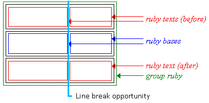
Ruby line breaking opportunity
Whether ruby can break between two adjacent ruby bases is controlled by normal line-breaking rules for the base text, exactly as if the ruby bases were adjacent inline boxes. (The annotations are ignored when determining soft wrap opportunities for the base level.)
For example, if two adjacent ruby bases are “蝴” and “蝶”, the line may break between them, because lines are normally allowed to break between two Han characters. However, if word-break is keep-all, that line break is forbidden.
<ruby>蝴<rt>hú</rt>蝶<rt>dié</rt>
Inter-base white space is significant for evaluating line break opportunities between ruby bases. As with white space between inlines, it collapses when the line breaks there. Similarly, annotation white space is also trimmed at a line break.
For example, given the following markup:
<ruby><rb>one</rb> <rb>two</rb> <rt>1</rt> <rt>2</rt></ruby>
Due to the space, the line may break between “one” and “two“. If the line breaks there, that space—and the space between “1” and “2”—disappears, in accordance with standard CSS white space processing rules. [CSS3TEXT]
3.3.2. Breaking Within Bases
For longer base texts, it is sometimes appropriate to allow breaking within a base-annotation pair. For example, if an English sentence is annotated with its Japanese translation, allowing the text to wrap allows for reasonable line breaking behavior in the paragraph.
Insert scanned example so people don’t think this is just the ramblings of an insane spec-writer.
Line-breaking within a ruby base is only allowed if the white-space property of the ruby base and all its parallel annotations allow it, and there exists a soft wrap opportunity within (i.e. not at the start or end) the content of each base/annotation box. Since there is no structural correspondence between fragments of content within ruby bases and annotations, the UA may break at any set of opportunities; but it is recommended that the UA attempt to proportionally balance the amount of content inside each fragment.
There are no line breaking opportunities within inter-character annotations.
Ruby alignment takes place within each fragment, after line-breaking.
3.4. Bidi Reordering
The Unicode bidirectional algorithm reorders logically-stored text for visual presentation when characters from scripts of opposing directionalities are mixed within a single paragraph.
To preserve the correspondance of ruby annotations to their respective ruby bases, a few restrictions must be imposed:
- The contents of a ruby base or ruby annotation must remain contiguous.
- Ruby annotations must be reordered together with their ruby bases.
- All ruby bases spanned by a single ruby annotation must remain contiguous.
To this end,
-
Bidi isolation is forced on all internal ruby boxes and the ruby container:
the normal and embed values of unicode-bidi compute to isolate,
and bidi-override computes to isolate-override.
Note this means that implicit bidi reordering does not work across ruby bases, so authors will need to ensure that the ruby container’s declared directionality does indeed match its contents.
- During layout, ruby segments are ordered within the ruby container by the direction property of their ruby container.
- Within a segment, ruby bases and ruby annotations are ordered within their respective containers by the direction property of the segment’s ruby base container. Note this means the direction property on ruby annotation containers is ignored for the purpose of layout. However, it can still inherit into the container’s children and thereby affect the inline base direction of any ruby annotations it contains.
As with other inline-level content, the bidi reordering of internal ruby boxes happens after line-breaking so that content is divided across lines according to its logical order.
See [CSS3-WRITING-MODES] for a more in-depth discussion of bidirectional text in CSS.
3.5. Line Spacing
The line-height property controls spacing between lines in CSS. When inline content on line is shorter than the line-height, half-leading is added on either side of the content, as specified in CSS2.1§10.8. [CSS21]
In order to ensure consistent spacing of lines, documents with ruby typically ensure that the line-height is large enough to accommodate ruby between lines of text. Therefore, ordinarily, ruby annotation containers and ruby annotation boxes do not contribute to the measured height of a line’s inline contents; any alignment (see vertical-align) and line-height calculations are performed using only the ruby base container, exactly as if it were a normal inline.
However, if the line-height specified on the ruby container is less than the distance between the top of the top ruby annotation container and the bottom of the bottom ruby annotation container, then additional leading is added on the appropriate side of the ruby base container such that if a block consisted of three lines each containing ruby identical to this, none of the ruby containers would overlap.
Note that this does not ensure that the ruby annotations remain within the line box. It merely ensures that if all lines had equal spacing and equivalent amounts and positioning of ruby annotations, there would be enough room to avoid overlap.
Authors should ensure appropriate line-height and padding to accommodate ruby, and be particularly careful at the beginning or end of a block and when a line contains inline-level content (such as images, inline blocks, or elements shifted with vertical-align) taller than the paragraph’s default font size.
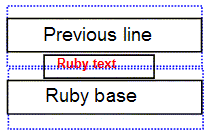
Ruby annotations will often overflow the line; authors should ensure content over/under a ruby-annotated line is adequately spaced to leave room for the ruby.
More control over how ruby affects alignment and line layout will be part of the CSS Line Layout Module Level 3. Note, it is currently in the process of being rewritten; the current drafts should not be relied upon.
4. Ruby Formatting Properties
The following properties are introduced to control ruby positioning, text distribution, and alignment.
4.1. Ruby Positioning: the ruby-position property
| Name: | ruby-position |
|---|---|
| Value: | [ over | under | inter-character ] |
| Initial: | over |
| Applies to: | ruby annotation containers |
| Inherited: | yes |
| Percentages: | N/A |
| Media: | visual |
| Computed value: | specified value |
| Animatable: | no |
| Canonical order: | per grammar |
This property controls position of the ruby text with respect to its base. Values have the following meanings:
Issue-107: Roland Steiner has requested the addition of an auto value as default. See this thread and this one.
- over
- The ruby text appears line-over the base.
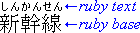
Ruby over Japanese base text in horizontal layout
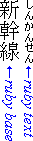
Ruby to the right of Japanese base text in vertical layout
- under
- The ruby text appears line-under the base.
This is a relatively rare setting used in ideographic East Asian writing systems,
most easily found in educational text.
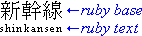
Ruby under Japanese base text in horizontal layout
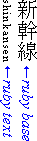
Ruby to the left of Japanese base text in vertical layout
- inter-character
-
The ruby text appears on the right of the base in horizontal text. This value forces the computed value of writing-mode of the ruby annotation container to be vertical-rl.
This value is provided for the special case of traditional Chinese as used especially in Taiwan: ruby (made of bopomofo glyphs) in that context appears vertically along the right side of the base glyph, even when the layout of the base characters is horizontal:
“Bopomofo” ruby in traditional Chinese (ruby text shown in blue for clarity) in horizontal layout
If multiple ruby annotation containers have the same ruby-position, they stack along the block axis, with lower levels of annotation closer to the base text.
4.2. Sharing Annotation Space: the ruby-merge property
| Name: | ruby-merge |
|---|---|
| Value: | separate | collapse | auto |
| Initial: | separate |
| Applies to: | ruby annotation containers |
| Inherited: | yes |
| Percentages: | N/A |
| Media: | visual |
| Computed value: | specified value |
| Animatable: | no |
| Canonical order: | per grammar |
This property controls how ruby annotation boxes should be rendered when there are more than one in a ruby container box: whether each pair should be kept separate, the annotations should be collapsed and rendered as a group, or the separation should be determined based on the space available.
Possible values:
- separate
-
Each ruby annotation box is rendered in the same column(s) as its corresponding base box(es). This style is called “mono ruby” in [JLREQ].
- collapse
-
All ruby annotation boxes within the same ruby segment on the same line are concatenated, and laid out as if their contents belonged to a single ruby annotation box spanning all their associated ruby base boxes. This style renders similar to “group ruby” in [JLREQ], except that ruby annotations are kept together with their respective ruby bases when breaking lines.
The following two markups render the same both characters fit on one line:
<ruby>無常<rt>むじょう</ruby>
and:
<ruby style="ruby-merge:collapse"><rb>無<rb>常<rt>む<rt>じょう</ruby>
However, the second one renders the same as ruby-position: separate when the two bases are split across lines.
- auto
-
The user agent may use any algorithm to determine how each ruby annotation box is rendered to its corresponding base box, with the intention that if all annotations fit over their respective bases, the result is identical to “mono ruby”, but if some annotations are wider than their bases the space is shared in some way to avoid imposing space between bases.
4.3. Ruby Text Distribution: the ruby-align property
| Name: | ruby-align |
|---|---|
| Value: | start | center | space-between | space-around |
| Initial: | space-around |
| Applies to: | ruby bases, ruby annotations, ruby base containers, ruby annotation containers |
| Inherited: | yes |
| Percentages: | N/A |
| Media: | visual |
| Computed value: | specified value (except for initial and inherit) |
This property specifies how text is distributed within the various ruby boxes when their contents do not exactly fill their respective boxes. Note that space distributed by ruby-align is unrelated to, and independent of, any space distributed due to justification.
Values have the following meanings:
- start
- The ruby content is aligned with the start edge of its box.
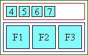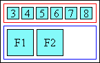
start ruby distribution
- center
- The ruby content is centered within its box.
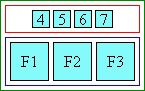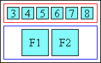
center ruby distribution
- space-between
-
The ruby content expands as defined for normal text justification (as defined by text-justify), except that if there are no justification opportunities the content is centered.
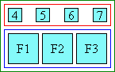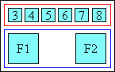
space-between ruby distribution
- space-around
-
As for space-between except that there exists an extra justification opportunities whose space is distributed half before and half after the ruby content.
Since a typical implementation will by default define justification opportunities between every adjacent pair of CJK characters and not between adjacent pairs of Latin characters, this should result in the behavior recommended by [JLREQ]: for wide-cell ruby content to be distributed...
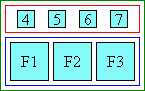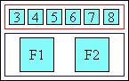
Wide-cell text in space-around ruby distribution is spaced apart
... and narrow-cell glyph ruby to be centered.
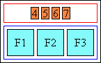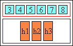
Narrow-width ruby text in space-around ruby distribution is centered
Add a paragraph explaining how to distribute space in situations with spanning annotations.
4.4. Ruby Text Decoration
Text decoration does not propagate from the base text to the annotations.
When text decoration is specified on an ancestor of the ruby, it is drawn across the entire content area of the ruby base container, including any extra space added on either side of the ruby base contents to accommodate long annotations. When text decoration is specified on a ruby base itself, this extra space is not decorated, similar to how a box’s own padding is not decorated when text decoration is specified directly on that box. [CSS3-TEXT-DECOR]
Text decoration may be specified directly on ruby base containers and ruby annotation containers: in such cases it is propagated to all of the container’s bases or annotations (respectively), and is also drawn between them.
This section needs some clarification about drawing decorations between the content of adjacent bases/annotations. Depends on if those boxes are as wide as their column or not.
5. Edge Effects
5.1. Overhanging Ruby
When ruby annotation box is longer than its corresponding ruby base box, the ruby annotation box may partially overhang adjacent boxes.
This level of the specification does not define how much the overhang may be allowed, and under what conditions.
If the ruby text is not allowed to overhang, then the ruby behaves like a traditional inline box, i.e. only its own contents are rendered within its boundaries and adjacent elements do not cross the box boundary:
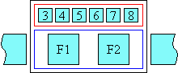
Simple ruby whose text is not allowed to overhang adjacent text
However, if ruby annotation content is allowed to overhang adjacent elements and it happens to be wider than its base, then the adjacent content is partially rendered within the area of the ruby container box, while the ruby annotation may partially overlap the upper blank parts of the adjacent content:
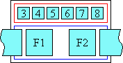
Simple ruby whose text is allowed to overhang adjacent text
The ruby annotations related to a ruby base must never overhang another ruby base.
The alignment of the contents of the base or the ruby text is not affected by overhanging behavior. The alignment is achieved the same way regardless of the overhang behavior setting and it is computed before the space available for overlap is determined. It is controlled by the ruby-align property.
I suspect overhanging interacts with alignment in some cases; might need to look into this later.
This entire logic applies the same way in vertical ideographic layout, only the dimension in which it works in such a layout is vertical, instead of horizontal.
The user agent may use [JIS4051] recommendation of using one ruby text character length as the maximum overhang length. Detailed rules for how ruby text can overhang adjacent characters for Japanese are described by [JLREQ].
5.2. Line-edge Alignment
When a ruby annotation box that is longer than its ruby base is at the start or end edge of a line, the user agent may force the side of the ruby annotation that touches the edge of the line to align to the corresponding edge of the base. This type of alignment is described by [JLREQ].
This level of the specification does not provide a mechanism to control this behavior.
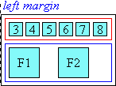 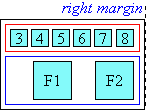
Line-edge alignment
Appendix A: Default Style Sheet
This section is informative.
A.1 Supporting Ruby Layout
The following represents a default UA style sheet for rendering HTML and XHTML ruby markup as ruby layout:
ruby { display: ruby; }
rp { display: none; }
rbc { display: ruby-base-container; }
rtc { display: ruby-text-container; }
rb { display: ruby-base; white-space: nowrap; }
rt { display: ruby-text; }
ruby, rb, rt, rbc, rtc { unicode-bidi: isolate; }
rtc, rt {
font-variant-east-asian: ruby; /* See [[CSS3-FONTS]] */
text-emphasis: none; /* See [[CSS3-TEXT-DECOR]] */
white-space: nowrap;
line-height: 1; }
rtc:lang(zh), rt:lang(zh) {
ruby-align: center; }
rtc, :not(rtc) > rt {
font-size: 50%; }
rtc:lang(zh-TW), :not(rtc) > rt:lang(zh-TW) {
font-size: 30%; } /* bopomofo */
Authors should not use the above rules: a UA that supports ruby layout should provide these by default.
A.2 Inlining Ruby Annotations
The following represents a sample style sheet for rendering HTML and XHTML ruby markup as inline annotations:
ruby, rb, rt, rbc, rtc, rp { display: inline; white-space: inherit;
font-variant-east-asian: inherit; text-emphasis: inherit; }
A.3 Generating Parentheses
Unfortunately, because Selectors cannot match against text nodes,
it’s not possible with CSS to express rules that will automatically and correctly
add parentheses to unparenthesized ruby annotations in HTML.
(This is because HTML ruby allows implying the ruby base from raw text, without a corresponding element.)
However, these rules will handle cases where either <rb>
or <rtc> is used rigorously.
/* Parens around <rtc> */
rtc::before { content: "("; }
rtc::after { content: ")"; }
/* Parens before first <rt> not inside <rtc> */
rb + rt::before,
rtc + rt::before { content: "("; }
/* Parens after <rt> not inside <rtc> */
rb ~ rt:last-child::after,
rt + rb::before { content: ")"; }
rt + rtc::before { content: ")("; }
6. Glossary
- Bopomofo
- 37 characters and 4 tone markings used as phonetics in Chinese,
especially standard Mandarin.
Note that the user agent is responsible for ensuring the correct relative alignment and positioning of the glyphs, including bopomofo tone marks, when displaying text, whether it occurs in ruby annotations or as normal inline text. Bopomofo Tone marks are spacing characters that occur (in memory) at the end of the ruby text for each base character. They are usually displayed in a separate column to the right of or above the bopomofo characters, and the position of the tone mark depends on the number of characters in the syllable. One tone mark, however, is placed before the bopomofo, not over it.
- Hanja
- Subset of the Korean writing system that utilizes ideographic characters borrowed or adapted from the Chinese writing system. Also see Kanji.
- Hiragana
- Japanese syllabic script, or character of that script. Rounded and cursive in appearance. Subset of the Japanese writing system, used together with kanji and katakana. In recent times, mostly used to write Japanese words when kanji are not available or appropriate, and word endings and particles. Also see Katakana.
- Ideograph
- A character that is used to represent an idea, word, or word component, in contrast to a character from an alphabetic or syllabic script. The most well-known ideographic script is used (with some variation) in East Asia (China, Japan, Korea,...).
- Kana
- Collective term for hiragana and katakana.
- Kanji
- Japanese term for ideographs; ideographs used in Japanese. Subset of the Japanese writing system, used together with hiragana and katakana. Also see Hanja.
- Katakana
- Japanese syllabic script, or character of that script. Angular in appearance. Subset of the Japanese writing system, used together with kanji and hiragana. In recent times, mainly used to write foreign words. Also see Hiragana.
Acknowledgments
This specification would not have been possible without the help from:
David Baron, Robin Berjon, Stephen Deach, Martin Dürst, Hideki Hiura (樋浦 秀樹), Masayasu Ishikawa (石川雅康), Taichi Kawabata, Chris Pratley, Xidorn Quan, Takao Suzuki (鈴木 孝雄), Frank Yung-Fong Tang, Chris Thrasher, Masafumi Yabe (家辺勝文), Boris Zbarsky, Steve Zilles.
Special thanks goes to the previous editors: Michel Suignard and Marcin Sawicki of Microsoft, and Richard Ishida of W3C.
Changes
The following major changes have been made since the previous Working Draft:
- Rewrote anonymous box generation rules and white space handling rules, defined specialized pairing of anonymous white space boxes.
- Took nested ruby handling out of pairing. (Will be handling it via sizing/layout.)
- Defined bidi layout of ruby structures.